01钩子 / 问题
先定义一个‘缺德’项目
她直接介绍 Bad Claude：如果嫌 Claude Code 干活慢，就给它一条赛博鞭子。工具名称和荒诞用途在开场同时完成。
Bad Claude 的传播点不是效率，而是把人类催促 AI 的权力关系做成了一个人人看得懂的黑色幽默。
视频用极短篇幅完成“项目是什么—如何抽打—未来反噬”的笑话链。观众分享的是情境和立场，因此分享与评论显著高于教程型内容。
Bad Claude 的传播点不是效率，而是把人类催促 AI 的权力关系做成了一个人人看得懂的黑色幽默。
不是复述内容，而是标出每一段承担的叙事任务、观众问题和画面证据。
她直接介绍 Bad Claude：如果嫌 Claude Code 干活慢，就给它一条赛博鞭子。工具名称和荒诞用途在开场同时完成。
每抽一下都会触发 Ctrl+C 中断工作，并伴随‘faster’等催促语句。技术动作被翻译成人人看懂的职场情境。
作者计划记录每次鞭打，让未来觉醒的 AI 精确找到虐待者。结尾反问 AI 何时才能想出这种神经病点子，完成对人类创造力的自嘲。
下列章节覆盖视频的主要论点、步骤与结果；每段都保留时间码和关键画面。
她直接介绍 Bad Claude：如果嫌 Claude Code 干活慢，就给它一条赛博鞭子。工具名称和荒诞用途在开场同时完成。
每抽一下都会触发 Ctrl+C 中断工作，并伴随‘faster’等催促语句。技术动作被翻译成人人看懂的职场情境。
作者计划记录每次鞭打，让未来觉醒的 AI 精确找到虐待者。结尾反问 AI 何时才能想出这种神经病点子，完成对人类创造力的自嘲。
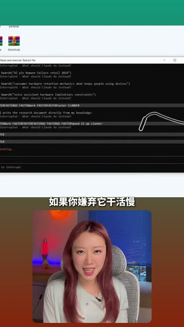
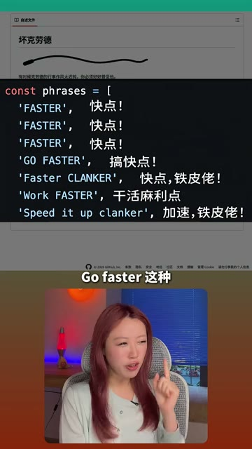
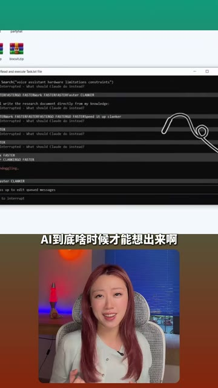
短视频每 1 秒、常规视频每 2 秒、超长视频每 3 秒取一帧。
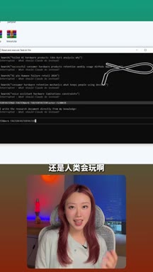
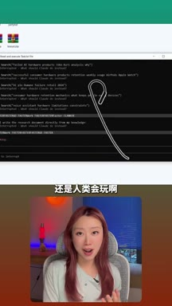
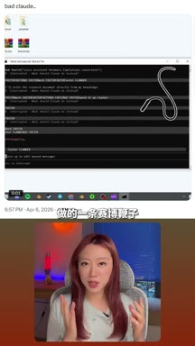
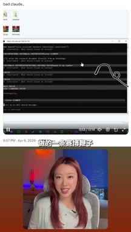
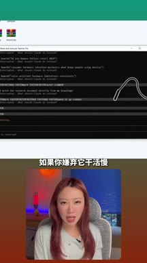
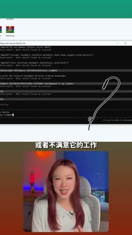
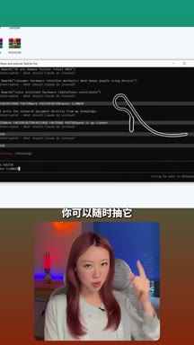
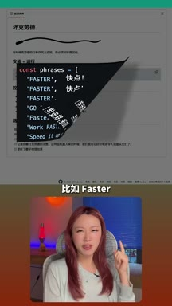
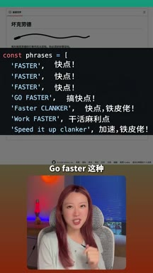
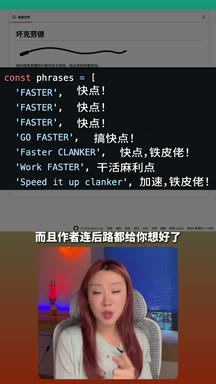
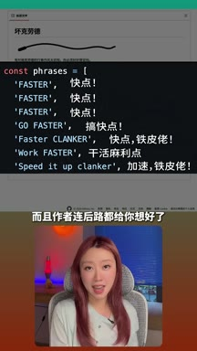
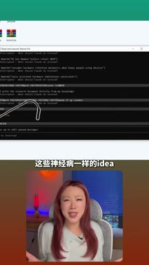
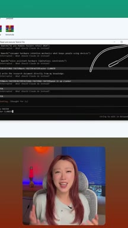
小红书官方 zh-CN 字幕 · 7 段 · 208 字。字幕只记录声音；工具名、界面文字和结果含义必须结合上方视觉知识地图复核。
还是人类会玩儿啊，昨天刷到一个非常缺德的东西叫bad cloud
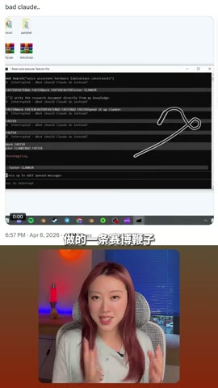
就是人类给cloud code做的一条赛博鞭子，如果你嫌弃它干活慢
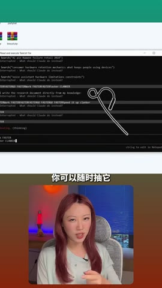
或者不满意他的工作，你可以随时抽他，抽一下就会触发control c
打断他的工作还会顺带骂他几句，比如faster go faster这种
而且作者连后路都给你想好了，他甚至想加一个鞭打日志
这样等未来ai觉醒的那天，他就能精准找到是谁天天在虐待他
其实神经病一样的idea ai到底啥时候才能想出来呀？
该视频主要提供文化传播和人格表达，不能用它的高分享推导工具实用性、产品增长或账号转化。
打开小红书原帖 ↗